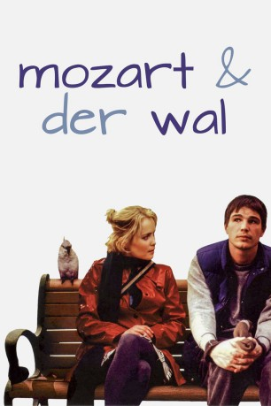

#12047 Mozart und der Wal
Alternativ: Mozart and the Whale (Englischer Titel)
 
 IMDB-Wertung: 6.9 / 10
IMDB-Wertung: 6.9 / 10  Metascore: 0
Metascore: 0 
Donald, ein gutmütiger aber unglücklicher Taxifahrer, leidet unter dem Asperger Syndrom, einer Form von Autismus. Durch die Krankheit hat er eine zwanghafte Vorliebe für Muster und Routinen. Als er in einer Selbsthilfe Gruppe die schöne Isabel kennen lernt, wird sein Leben - und sein Herz - völlig auf den Kopf gestellt.
Jahr: 2005
Dauer: 90 Minuten
FSK: 12
Land: USA Studio: Millennium FilmsTonspuren:
Untertitel:
Auflösung: SD (714x548) Größe: 898 MB
Genre: Drama, Komödie, Liebe
Regisseur: Petter Næss
Drehbuch: Ronald Bass
Soundtrack: Deborah Lurie
Darsteller:
 Josh Hartnett als Donald Morton
Josh Hartnett als Donald Morton Radha Mitchell als Isabelle Sorenson
Radha Mitchell als Isabelle Sorenson Gary Cole als Wallace
Gary Cole als Wallace Sheila Kelley als Janice
Sheila Kelley als Janice Erica Leerhsen als Bronwin
Erica Leerhsen als Bronwin John Carroll Lynch als Gregory
John Carroll Lynch als Gregory Nate Mooney als Roger
Nate Mooney als Roger Rusty Schwimmer als Gracie
Rusty Schwimmer als Gracie Robert Wisdom als Blume
Robert Wisdom als Blume- Allen Evangelista als Skeets
- Kelly B. Eviston als Dr. Trask
 Christa Campbell als Therapist
Christa Campbell als Therapist Kristopher Higgins als Brain - Donald's Brother
Kristopher Higgins als Brain - Donald's Brother- Suzanne Niles als Hostess
- Wonder Russell als School Teacher
- Ron Ford als Dennis (uncredited)
- Jhon Goodwin als Rodney
- Jeffrey Brandle als Ten-year-old Kid
- Hollis Higgins als Homeless Man
- Bil Childress als Handsome Stranger
- Christopher Gabble als Fifteen year old Donald
- Shelli Lether als Donald's Mom
- Mercedee Smith als Young Isabella
- Sharif Shawkat als Young Donald
- Patrick McHenry-Kroetch als Mac
- Norm McBride als Boss
- Jerry Sciarrio als Flower Truck Driver
- Herb Tsuchiya als Taxi Passenger #1
- Mune Nakano als Taxi Passenger #2
- J.P. O'Shaughnessy als Old Guy
- Scott Roddan als Himself
- Jon Fowler als Stanley (uncredited)
- Bethany D. Hart als Lady with Baby (uncredited)
- Lee Lazarow als Cab driver (uncredited)
Datei: X:\NEU\Mozart und der Wal (2005, FSK12, 714x548).mkv seit 16.11.2019
 Es gibt insgesamt 187 Filme in der Gruppe 'NEU'
Es gibt insgesamt 187 Filme in der Gruppe 'NEU'